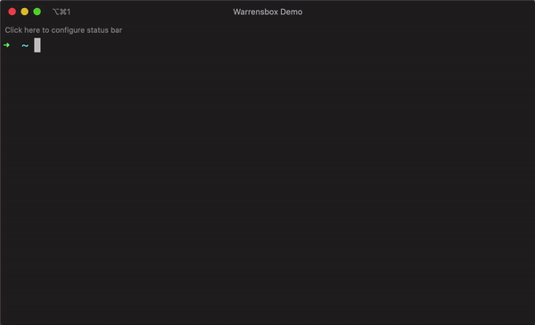
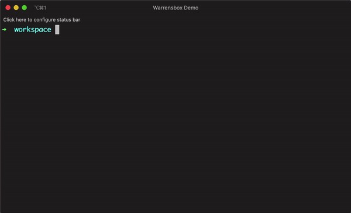
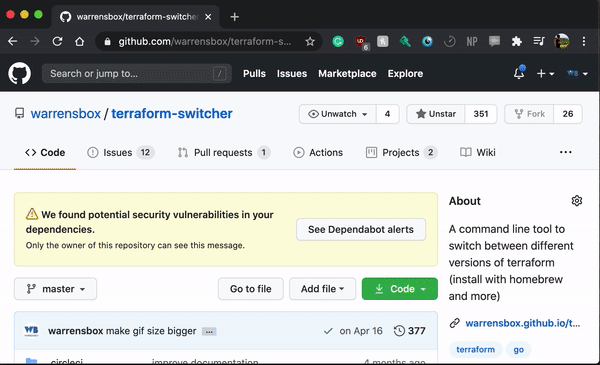
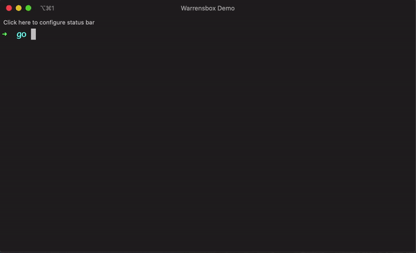
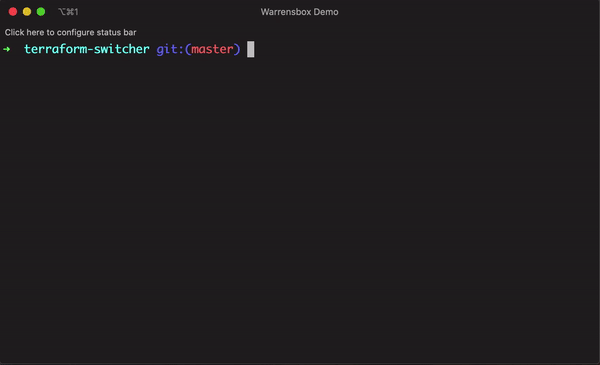

How to Contribute
Step-by-step instructions
An open source project becomes meaningful when people collaborate to improve the code.
Feel free to look at the code, critique and make suggestions. Let's make tfswitch better!
Required version
go version 1.23
Step 1 - Create workspace
Skip this step if you already have a GitHub go workspace
Create a GitHub workspace.

Step 2 - Set GOPATH
Skip this step if you already have a GitHub go workspace
Export your GOPATH environment variable in your go directory.
export GOPATH=`pwd`

Step 3 - Clone repository
Git clone this repository.
git clone git@github.com:warrensbox/terraform-switcher.git

Step 4 - Get dependencies
Go get all the dependencies.
go mod download
go get -v -t -d ./...
Test the code (optional).
go vet -tests=false ./...
go test -v ./...

Step 5 - Build executable
Create a new branch.
git checkout -b feature/put-your-branch-name-here
Refactor and add new features to the code.
Go build the code.
go build -o test-tfswitch
Test the code and create a new pull request!

Contributors
Click here to see all contributors.